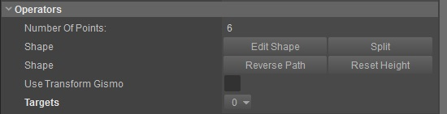
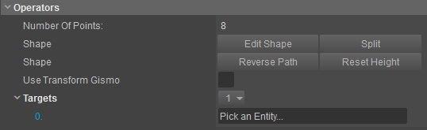
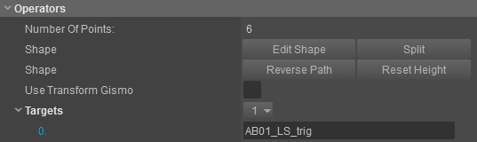

Обзор
Узнайте о добавлении объектов в сцену и о том, как их редактировать.
Создание объектов
Кисти, объекты, рамки, частицы
Объекты с предопределенными настройками можно легко создать, открыв Создать объект инструмент, выберите категорию и нажмите double на объект, который хотите разместить на своем уровне. Вновь созданный объект будет следовать за курсором мыши, как только курсор мыши будет помещен внутри основного 3D-окна просмотра.
Привязка к геометрии включится автоматически, чтобы помочь вам разместить объект на сцене.
Вы также можете включить Привязка к сетке, Угловая привязка и Повернуть до нормали к поверхности чтобы уточнить ваше размещение.
Нажмите здесь для получения дополнительной информации о привязке.
Нажмите левую кнопку мыши (LMB), чтобы разместить объект на уровне.
Области (и другие объекты на основе полилиний)
Области — это пользовательские фигуры, которые нужно рисовать на уровне вручную.
В Создать объект инструмент, перейдите в Площадь -> Форма чтобы активировать создание формы.
Как только вы переместите курсор мыши в основной видовой экран, в него будет проецироваться небольшой прямоугольник под названием «Точка» (вершина).
Размещением можно управлять, включив ограничения, Привязка к сетке, Угловая привязка, Привязка к местностии Привязка к геометрии.
Дважды щелкните левой кнопкой мыши (LMB), чтобы завершить форму.
Изменение формы
После того, как вы создали свою фигуру, в Свойства инструмент, вы можете ввести Редактировать фигуру режим и выбирайте, перемещайте, добавляйте или удаляйте вершины фигуры, чтобы настроить ее в соответствии с нужной областью.
- Дважды щелкните существующую вершину фигуры, чтобы удалить ее.
- Пресса Ctrl+LMB чтобы добавить новую вершину в фигуру (щелкните по периметру фигуры, чтобы добавить).
- Используйте Сплит инструмент, чтобы разбить фигуру на 2 части. После активации наведите указатель мыши на край, чтобы выбрать первую точку, в которой вы хотите, чтобы произошел разрез, а затем вторую точку, чтобы определить линию разреза. В результате появятся две новые формы, которые полностью закрыты.
Связывание объектов с фигурами
Способ связывания фигур с другими объектами немного изменился. Теперь мы используем более стандартизированную систему, соответствующую другим инструментам. В Свойства инструмент вы можете найти в разделе Операторы:

- Нажмите кнопку 0 рядом с Цели , чтобы открыть меню и выбрать «Добавить» или «Вставить ссылку».
- Как только опция появится, щелкните внутри поля ввода, и вам будет предложено выбрать объект.

- Выберите объект в 3D-окне просмотра, чтобы создать ссылку на фигуру.

- Теперь триггерная сущность называется AB01_LS_trig связан с этой формой.
Дублирование объектов
Дублируйте выбранный объект, нажав Ctrl+D. Переместите указатель мыши, чтобы разместить объект, щелкните LMB разместить объект.
Размещением можно управлять, включив ограничения, Привязка к сетке, Угловая привязка, Привязка к местностии Привязка к геометрии.
Вы также можете дублировать объект, перейдя в строку меню вверху экрана: Редактировать -> Дублировать.
Удаление объектов
Используйте Удалить кнопку на клавиатуре, чтобы удалить выбранные объекты.
Если вы хотите отменить удаление, вы можете использовать Отменить кнопку или используйте ярлык Ctrl+Z.